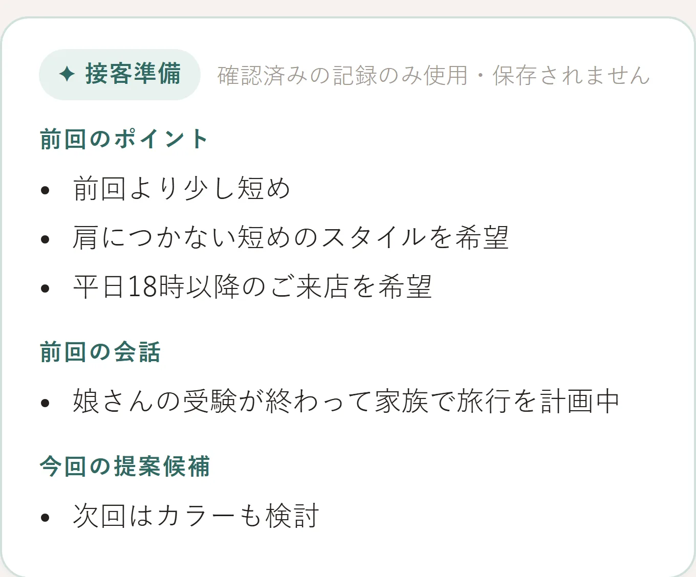
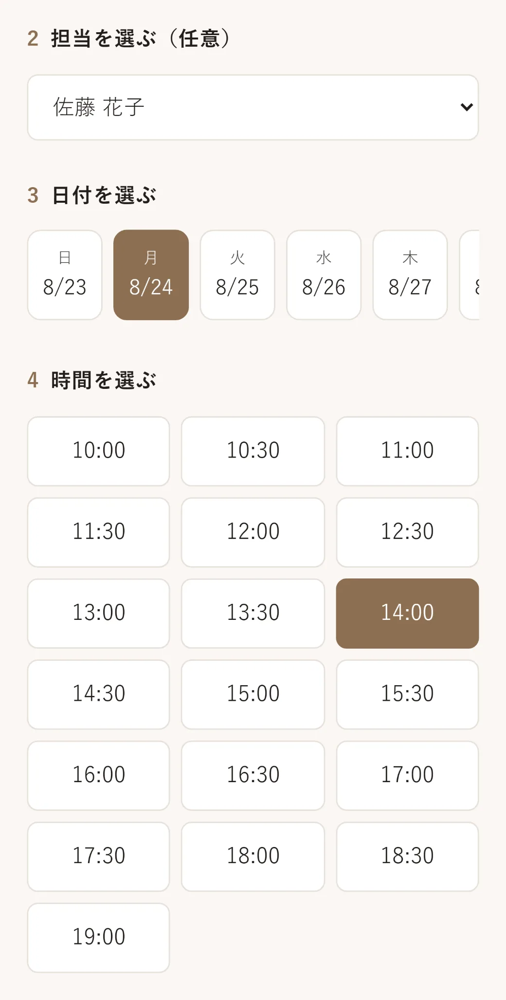
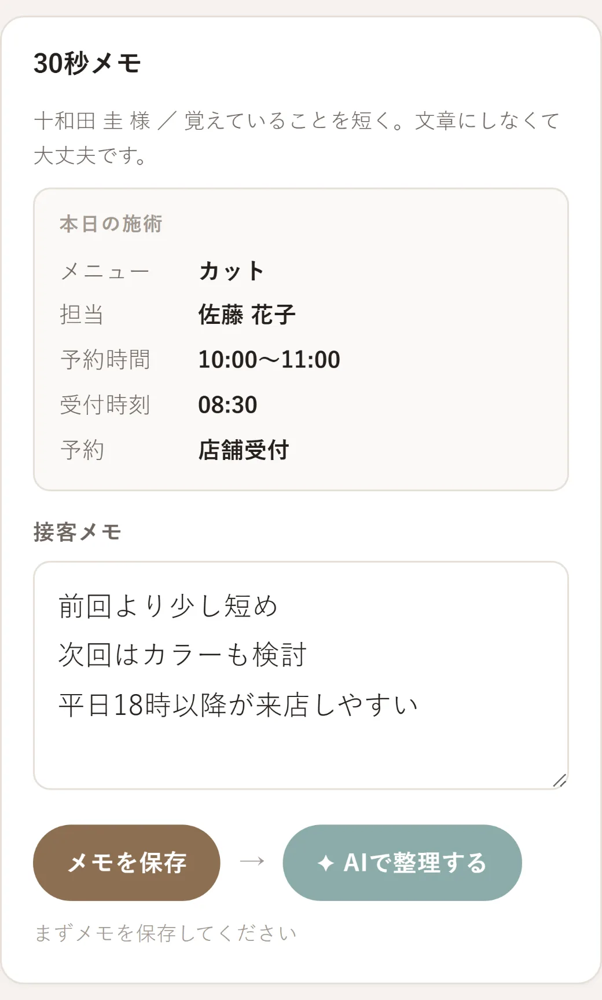
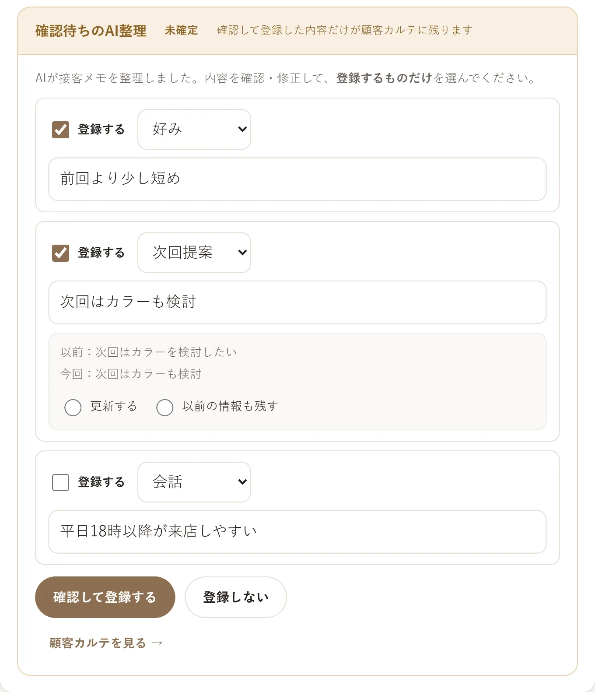
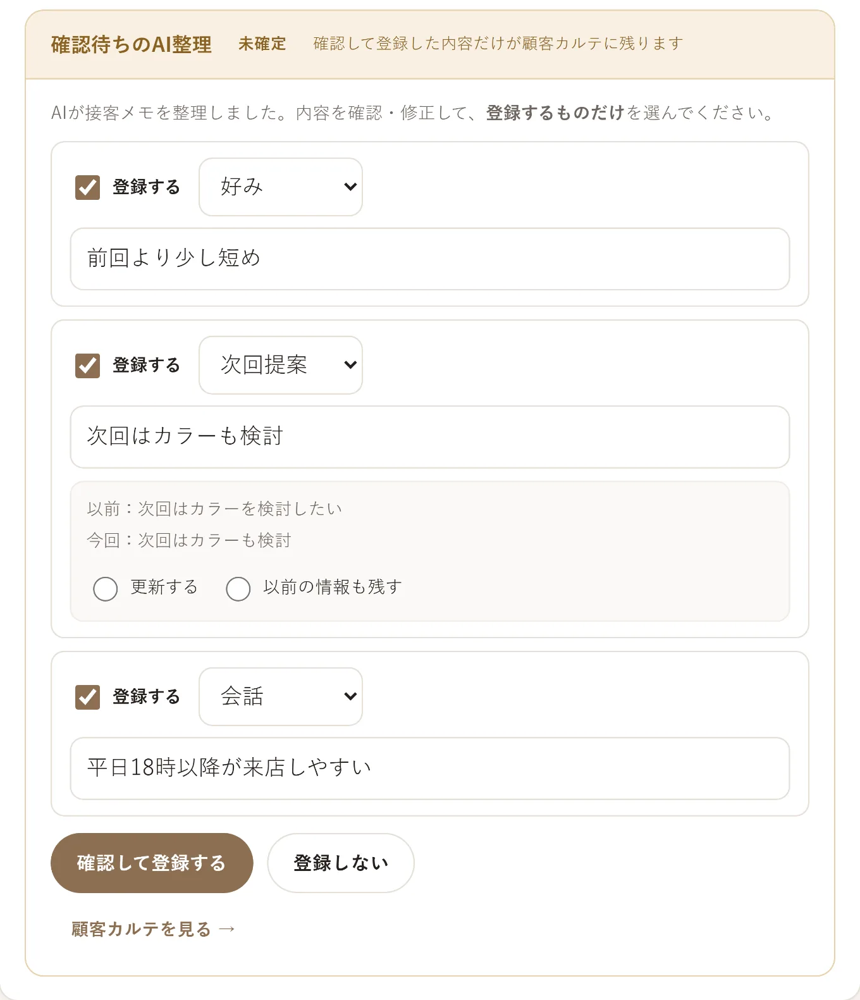
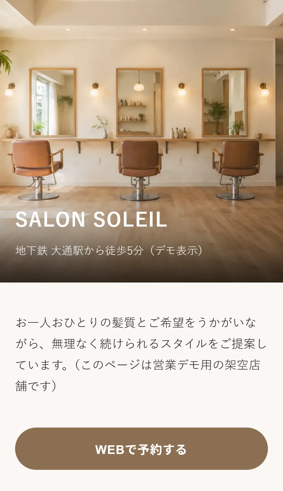

美容室・サロンの店舗運営を、ひとつに。
予約・接客・再来店が、
ひとつにつながる。
Smart Labo Salonは、予約、顧客情報、接客メモ、 LINEでの再来店支援、店舗ホームページを ひとつにつなぐ店舗運営サービスです。
実際の画面をご覧いただきながらご説明します。
実際の画面

※掲載画面はデモ用の架空データです。
機能が増えるだけではありません。
店舗の毎日が、こう変わります。
予約確認、接客の引き継ぎ、お客様へのご案内、店舗ページの更新まで。 日々の手間を減らし、お客様と向き合う時間をつくります。
-
予約確認
導入前予約情報を何か所も確認
導入後予約・来店・顧客情報を一画面で確認
探す手間を減らし、受付をスムーズに。
-
接客の引き継ぎ
導入前前回の内容が担当者の記憶頼み
導入後短いメモをAIが整理し、次回来店前に表示
担当が変わっても、前回を踏まえた接客へ。
-
再来店のご案内
導入前誰に何を案内するか決めにくい
導入後最終来店日や利用メニューで対象を絞り、スタッフが確認して個別送信
必要なお客様へ、必要なご案内を。
-
店舗ページの更新
導入前写真やメニューの変更を制作会社へ依頼
導入後店舗の管理画面から自分たちで更新
依頼の手間と反映までの待ち時間を減らす。
機能
ひとつにまとまる機能
店舗運営に必要な機能を、ひとつの月額で。すべて現在ご利用いただける機能です。
- 1. 予約・来店管理WEB予約、手動予約、予約なし来店、来店中、接客終了
- 2. 顧客カルテ・接客メモ顧客情報、来店履歴、接客後の短いメモ
- 3. AIによる情報整理AIがメモを整理し、残す内容はスタッフが確認して決定
- 4. 次回来店前の接客準備前回のポイント、会話、提案候補を来店前に確認
- 5. LINE再来店支援最終来店日や利用メニュー等から対象を選び、人数と本文を確認して個別送信
- 6. 店舗ホームページ・WEB予約写真、メニュー、営業時間、スタッフ情報等を店舗で更新
- 7. オーナー向け管理PINで保護された件数確認とCSV書き出し
再来店
お客様に合わせた
再来店のきっかけをつくる
「誰に・何を送るか」をスタッフが決められるように、対象の絞り込みと確認の仕組みを用意しています。
現在できる例
- しばらく来店のないお客様へ、再来店のご案内
- 特定メニューを利用したお客様へ、関連メニューのご案内
- 担当スタッフや未来の予約有無などで対象を絞る
- 送信前に対象人数と本文を確認する
LINE連携済みのお客様が対象です。店舗のLINE公式アカウントのご契約・設定が必要で、 LINE側の利用料金は店舗のご負担となります。送信はスタッフが内容を確認したうえで行います。 ご利用の開始にあたっては、導入時に当社と利用開始確認を行います。
店舗ホームページ
店舗の情報を、
自分たちで更新できます。
写真・メニュー・営業時間・スタッフ紹介は、店舗の管理画面からいつでも更新できます。 軽微な変更のたびに制作会社へ依頼する手間を減らせます。
- 店舗写真店内・外観の写真の差し替え
- メニュー名称・料金・掲載可否
- 営業時間営業時間・臨時休業
- スタッフ紹介紹介文・スタッフ写真
- 予約不可時間予約を受けない時間帯の設定
- キャンペーン掲載期間を決めて店舗ページに掲載
- LINE友だち追加リンク店舗ページからの友だち追加導線
- 公開／非公開メニュー・スタッフごとの掲載切り替え
大きなデザイン変更や新しいページの追加、特別な制作はSmart Laboへご相談ください。
実際の画面
実際の画面で、利用の流れを見る
予約の入り方から、接客メモ、AIの整理、 次回の接客準備までを実際の画面のままご覧いただけます。
-
1WEB予約が入る
お客様は、24時間いつでも予約できる。
店舗ページから担当・日付・時間を選ぶだけ。電話番のために手を止める必要がありません。

-
2来店・接客メモを残す
接客のあと、その場で30秒。
スマートフォンから短く残すだけ。きれいな文章に整える必要はありません。

-
3AIが情報を整理する
短いメモから、次に使える形へ。
好み・会話の内容・次回の提案候補に仕分けされ、確認待ちの状態で並びます。

-
4スタッフが内容を確認する
残す内容は、人が決める。
チェックを外した項目は登録されません。AIが勝手に顧客情報を書き換えることはありません。

-
5次回の接客準備につなげる
思い出すところから、始めない。
次の来店前に、前回のポイント・前回の会話・今回の提案候補がそろっています。
-
6店舗ページとWEB予約を確認する
お客様から見える入口も、ひとつに。
店内写真・メニュー・スタッフ・WEB予約までが、そのまま次のご来店の入口になります。

※掲載画面はデモ用の架空データです。実在の店舗・お客様の情報は含みません。
気になる機能から、
お聞かせください。
現在の進め方をうかがったうえで、店舗に合う使い方をご提案します。 実際の画面をご覧いただきながらご説明します。
月額14,800円（税別）・初期費用0円。料金の詳細を見る
その他のサービス 店舗ホームページ制作 Smart Labo Works（法人向け）
運営：株式会社スマートラボ会社情報を見る